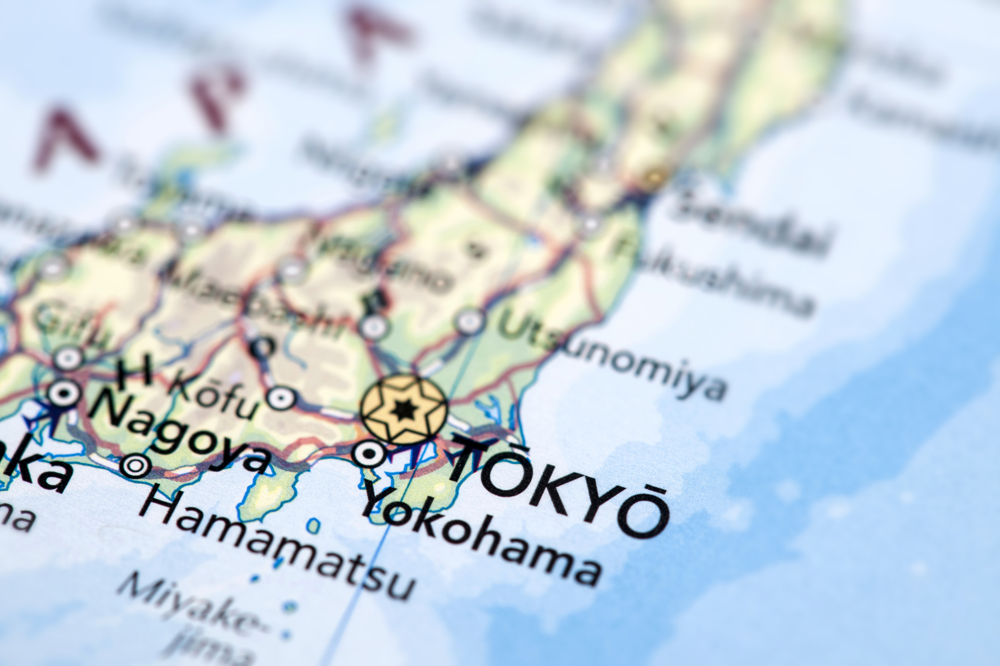
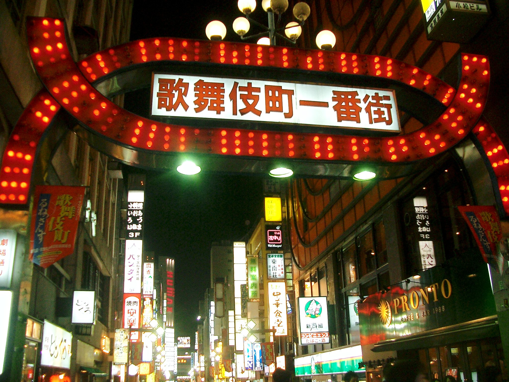
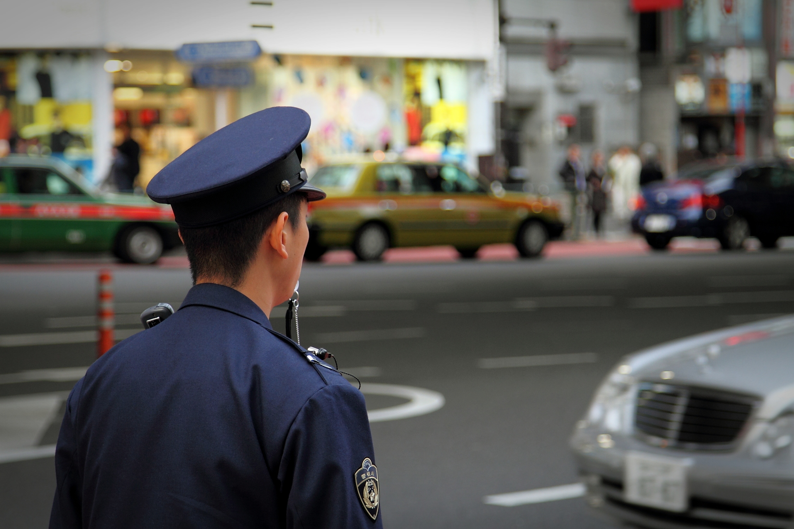
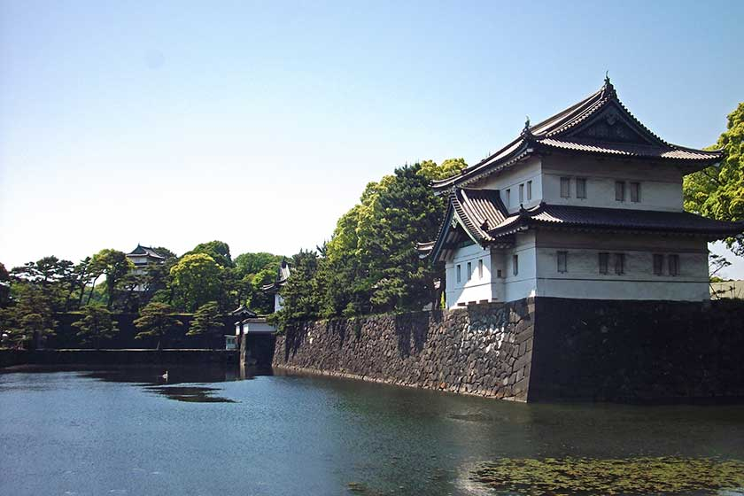
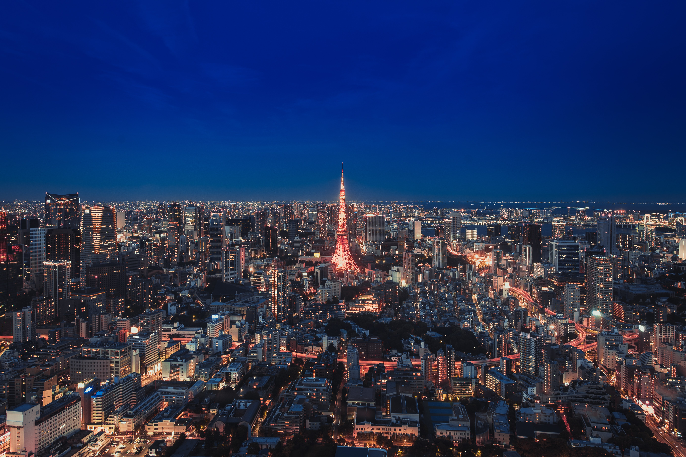
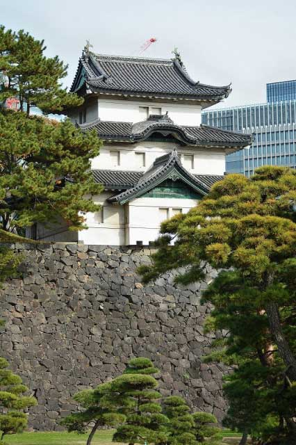

TOKYO
Interesting Facts About Tokyo
Tokyo, the capital of Japan, is officially known as the Tokyo Metropolis. This is one of the worlds most densely populated cities. The number of interesting facts about this city is endless but here are our top forty facts about Tokyo.
Tokyo is often referred to as a city, but is officially known and governed as a “metropolitan prefecture,” which is different from a city and combines elements of a city and a prefecture. The Tokyo metropolitan government administers the 23 Special Wards of Tokyo. These Special Wards contain the districts that have become world famous for their different characteristics. To make things even more confusing, Japanese people will refer to each district as a city. Good luck finding your way around the city…I mean district…I mean ward?
Tokyo first settled around 3000 BC. Back when Tokyo was just a small fishing village is was named Edo. It’s name was changed to Tokyo in 1868 when it became the imperial capital of Japan. The name Tokyo translates to “Eastern Capital”

On the whole Japanese people don’t speak many other languages and whilst Tokyo is a very large city, English is not widely spoken. Ordering goods or services, booking a cinema ticket or even arrange medical treatments can be very difficult if you do not know any Japanese, so it is essential to learn the basics of the language.
Tokyo Has More Neon Signs Than Any Other City In The World. A trademark image in Tokyo is entire streets full of neon lights!
Tokyo Is One Of The Safest Cities To Travel To. Crimes against tourists are extremely rare. It actually has one of the lowest crime rates per capita of any major city in the world.
A capsule hotel is a type of hotel developed in Japan that features a large number of extremely small “rooms” (capsules) intended to provide cheap, basic overnight accommodation for guests who do not require the services offered by more conventional hotels. These capsules can sometimes include TV’s and wifi.

Tokyo Tower is a communications and observation tower in the Shiba-koen district of Minato Ward, Tokyo. It gets repainted every 5 years and almost 7500 gallons of paint are used. This process takes almost a full year and is completed completely by hand.

Overview of the history of Tokyo
Tokyo has been the capital of Japan since only 1868. Tokyo's previous incarnation, a town called Edo, grew from an obscure fishing village of the 15th century to become the biggest city in the world by the 18th century.Tokyo has been Japan's center of real political power since 1603 (when it became the seat of the military Shogun rulers) - long before it became the nation's official capital (i.e. home to the Emperor).As the seat of Japan's early modern warlords - the "rulers behind the throne" - and as the present-day capital of Japan, Tokyo has been the stage on which Japan's internal power struggles, encounters with the outside world, defeats, and triumphs, have taken place for the past four centuries.Besides being host to the machinations and fates of the great and powerful, Tokyo is also, of course, a city with a life and atmosphere of its own.This time line of Tokyo's history will attempt to incorporate and convey the many influences: political, economic, social, and, not least, natural (mainly fire, earthquakes, and bad weather), that have shaped this great city throughout its past, and will continue to shape its future.

Tokyo pre-history
The oldest records of human habitation in what is now Tokyo are the shell mounds left by communities that were part of the Jomon culture, which is thought to have lasted from about 10,000BC to 300BC. Jomon means "cord-marked" and refers to the elaborate pottery left behind with its characteristic coiled cord print ornamentation. The first such mounds investigated were those found in the Oi district of Tokyo's Shinagawa ward by the US zoologist Edward S. Morse in 1877. Simpler and lighter-colored pottery was discovered in the Yayoi area of Tokyo's Bunkyo ward. It is thought to be left by a later culture, named "Yayoi," after the area in Tokyo. However, Yayoi culture is thought to have actually originated in west Japan, displacing the Jomon in about 100BC to 100AD. The various Yayoi culture villages that have been unearthed in the Kanto region (in eastern Japan) have all been in the present-day Tokyo area.
Tokyo in history
The earliest historical roots of what we now call Tokyo can be traced to the mid 7th century, known in Japan as the Asuka period. The Asuka period dates from 645 when there was a palace revolution, and extended until the end of the succeeding Nara period (710-794). In the Asuka period, the imperial court imposed on Japan the ritsuryo system, i.e. a criminal and administrative code of law, embodied in what was called the Taiho Code, inspired by that used by China's Tang Dynasty (618-907).It is as part of the territory subject to the ritsuryo system that Edo/Tokyo makes its first appearance in historical sources.
Musashi history
At the time of ritsuryo in Japan, the area occupied by present day Tokyo formed part of the province of Musashi known for its copper mines.(Musashi comprised the districts of Tama, Toshima, Ebara, Adachi, and Katsushika. Present day western Tokyo was part of Musashi's Tama district.)Fuchu, now a city in the west of the Tokyo metropolitan area became the capital of Musashi in 645 - specifically the area near the present Okunitama Shrine.The main temple for the province of Musashi was in present-day Kokubunji City, next to and just north-west of Fuchu City. The temple is thought to have been completed by the late 750s. (The oldest temple in Tokyo, however, is Sensoji Temple in the Asakusa district of Tokyo's Taito ward, established in 645.)

Edo history
Modern Tokyo has its direct roots in what began as the village of Edo in Musashi province.The first mention in historical records of Edo is in the Azuma Kagami, an official history from the Kamakura period written in about 1300.The name Edo is thought to date from the late Heian period (794-c.1189) or early Kamakura period (1185-1333) when Shigetsugu Edo founded the Edo clan and established his residence on the land that now forms the East Gardens of the Imperial Palace in Tokyo (which at that time was where the Sumida River entered Tokyo Bay).After the demise of the Edo clan in the 15th century, O-ta Sukenaga, a samurai, poet, military tactician and, later, Buddhist monk (who adopted the name Dokan), designed and built a fortress on the site for his liege, Uesugi Sadamasa (1443-1494), work beginning on the walls and moats in 1457.
Revolution in Tokyo history
January 1868: Conflict between samurai from Satsuma province and the Bakufu forces. The outer works of Edo Castle are set fire to, and, in response, Bakufu forces destroy the Edo residence of the daimyo of Satsuma, also known as the Palace of Satsuma. October 16 1868: Edo becomes the capital of Japan, and its name is changed to Tokyo.1869 the Emperor moves to Tokyo from Kyoto, taking up residence in old Edo Castle, now the Imperial Palace. June 1869 Yasukuni Shrine is built to honor the victims who fought for the restoration of the Emperor in the Boshin War, (i.e. the war that accompanied Japan's transformation from the feudal Shogunate to a modern Emperor-centered state at the beginning of the Meiji Period). The shrine is first known as Tokyo Shokonsha, which is changed to Yasukuni Shrine in 1879 as part of the campaign to promote State Shinto as a national(ist)

Attractions